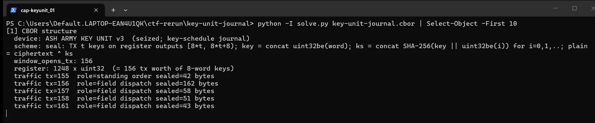
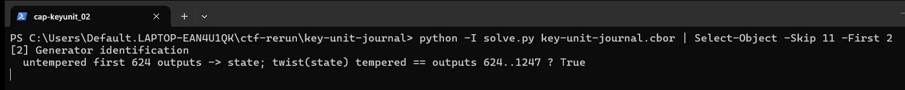
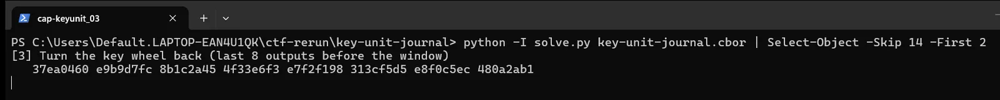
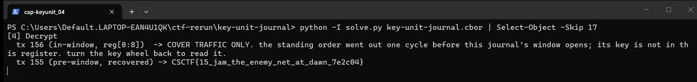

01Start point: the journal, key-unit-journal.cbor
- What I did: checked its SHA-256 (it matched) and decoded the CBOR with a small hand-written decoder.
- What I found: a map with device, scheme, window_opens_tx = 156, register (1248 x uint32) and traffic (5 sealed messages: tx 155 "standing order", tx 156, 157, 158 and 161 "field dispatch"). The scheme field spells out the cipher:
- tx t uses register outputs [8t, 8t+8)
- key = concat uint32be(word)
- keystream = concat SHA-256(key || uint32be(i)) for i = 0, 1, ...
- plain = ciphertext ^ keystream
- Thinking: the window opens at tx 156, so reg[0:8] is the tx 156 key and the tx 155 key is the 8 outputs just before the first recorded word. Rebuilding those meant identifying the generator.

02Pivot: the register is a raw MT19937 stream
- Thinking: 1248 = 2 x 624, and 624 words is exactly one MT19937 state.
- What I did: untempered the first 624 outputs to rebuild the state, applied one twist and tempered the result.
- Result: it matched outputs 624..1247 exactly, so the register is plain Mersenne Twister output.

03Pivot: turning the key wheel back one twist
- What I found: tx 156 decrypts with reg[0:8] to a cover message saying the standing order "went out one cycle before this journal's window opens; its key is not in this register. turn the key wheel back to read it."
- Thinking: that confirmed the scheme and the plan: run one twist backward to get the previous 624-word block P.
- What I did: inverted the in-place twist, which computes:
- y_i = top bit of P[i] | low 31 bits of P[i+1]
- new[i] = new[i-227] ^ (y_i >> 1) ^ (0x9908b0df if y_i is odd, else 0), for i >= 227
- Result: for i = 623 down to 227, new[i] ^ new[i-227] gives y_i, so P[228..623] comes back in full. Tempering P[616..623] gives the 8 outputs just before the window: 37ea0460 e9b9d7fc 8b1c2a45 4f33e6f3 e7f2f198 313cf5d5 e8f0c5ec 480a2ab1.

04Flag: decrypting the tx 155 standing order
- What I did: packed the 8 words into the key and XORed the tx 155 ciphertext with the SHA-256 keystream.
- Result: CSCTF{15_jam_the_enemy_net_at_dawn_7e2c04}
- Thinking: the routine that reads tx 156 turned tx 155 into clean flag text, which confirms the 8 words.
